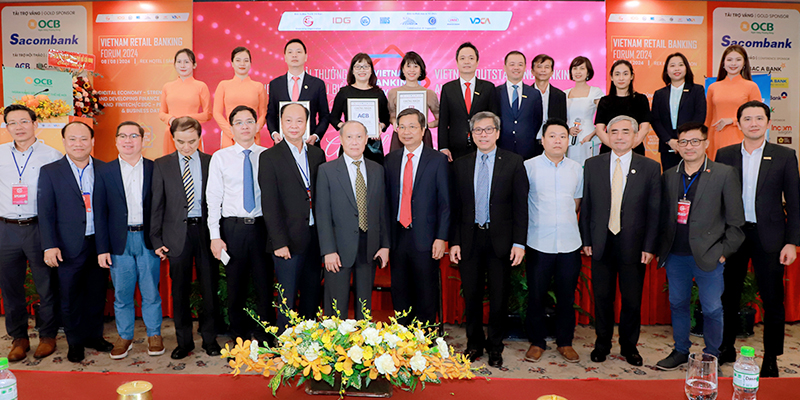
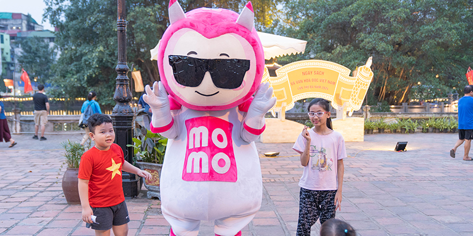
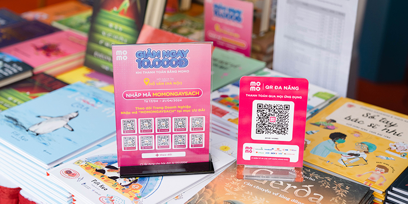
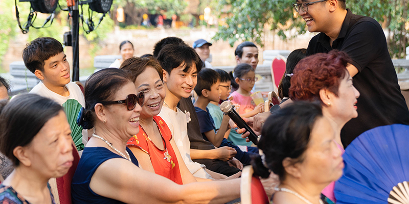
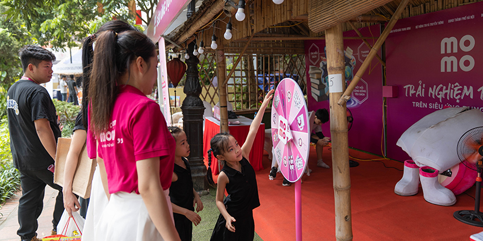
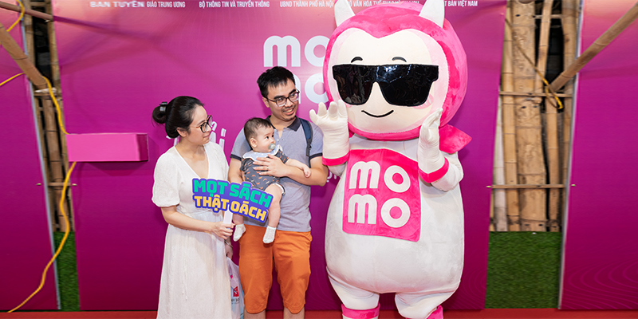

Tin tức
×
Thông Cáo 13/08/2024 - 4.2k lượt xem
Ngày 8/8/2024, MoMo được vinh danh là “Công ty Fintech tiêu biểu” tại sự kiện "Giải thưởng Ngân hàng Việt Nam tiêu biểu - Vietnam Outstanding Banking Awards" trong khuôn khổ Diễn đàn Ngân hàng Bán lẻ Việt Nam 2024. Đây là lần thứ 6 liên tiếp MoMo nhận giải thưởng này, cho thấy những nỗ lực không ngừng của MoMo trong việc đưa công nghệ thúc đẩy chuyển đổi số, góp phần giúp người Việt tiếp cận dịch vụ tài chính dễ dàng.
Giải thưởng Ngân hàng Việt Nam tiêu biểu (Vietnam Outstanding Banking Awards) là giải thưởng nằm trong sự kiện “Diễn đàn Ngân hàng Bán lẻ Việt Nam” (Vietnam Retail Banking Forum) - một sự kiện thường niên được tổ chức từ năm 2012. Sự kiện do Tập đoàn Dữ liệu quốc tế tại Việt Nam (IDG Việt Nam) phối hợp cùng Hiệp hội Ngân hàng Việt Nam (VNBA), Hội Truyền thông số Việt Nam (VDCA) cùng các đơn vị uy tín tổ chức. Giải thưởng được tổ chức với mục đích tìm kiếm và tôn vinh những sản phẩm, dịch vụ ngân hàng có kết quả hoạt động xuất sắc, tiêu biểu, đóng góp thiết thực cho sự phát triển cho ngân hàng và lĩnh vực tài chính nói riêng cũng như xã hội nói chung.
Năm nay, thay vì nộp hồ sơ tham gia thì các hạng mục giải thưởng như Ngân hàng bán lẻ, Ngân hàng số, Công ty Fintech,... chuyển sang hình thức khảo sát người sử dụng và doanh nghiệp. Chương trình khảo sát được tiến hành từ 15/3 đến 15/6/2024 với đối tượng là khách hàng cá nhân và doanh nghiệp, thu được 56.526 kết quả thành công và 24 hồ sơ của các tổ chức tín dụng.
 MoMo lần thứ 6 được vinh danh là “Công ty Fintech tiêu biểu”. Ảnh: MoMo
MoMo lần thứ 6 được vinh danh là “Công ty Fintech tiêu biểu”. Ảnh: MoMo
Năm 2024 là lần thứ 6 liên tiếp MoMo được Hội đồng bình chọn và khách hàng được khảo sát đã đánh giá cao về nỗ lực thúc đẩy chuyển đổi số và luôn đề cao trách nhiệm với cộng đồng. Ngay từ khi ra đời (2014) MoMo kiên định với sứ mệnh dùng công nghệ để thúc đẩy sự phát triển tài chính toàn diện tại Việt Nam, đồng thời giúp người dân có thể tiếp cận các dịch vụ tài chính một cách đơn giản, tiện lợi với chi phí thấp nhất. Trong hành trình hơn 10 năm ra mắt, mọi hoạt động MoMo luôn nỗ lực hiện thực hóa và giải thưởng lần này được xem là ghi nhận cho những đóng góp đó.
 Giải thưởng “Công ty fintech tiêu biểu” ghi nhận cho những đóng góp tích cực của MoMo vào chuyển đổi số ngành tài chính. Ảnh: MoMoHiện tại, siêu ứng dụng MoMo có hơn 30 triệu khách hàng đăng ký sử dụng cùng hơn 300.000 điểm chấp nhận thanh toán trải rộng khắp toàn quốc, đồng thời trở thành đối tác chiến lược của tất cả ngân hàng và công ty tài chính tại Việt Nam. MoMo không chỉ dừng ở việc cung cấp dịch vụ thanh toán mà còn là nền tảng cung cấp kiến thức về việc quản lý chi tiêu, quản lý tài chính giúp người dân thu nhập trung bình, thấp có kiến thức tài chính, là nền tảng kết nối những người tham gia thiện nguyện với các NGO để hỗ trợ những hoàn cảnh khó khăn. MoMo cũng phối hợp với các ngân hàng và tổ chức tài chính, hỗ trợ hàng trăm nghìn khách hàng thu nhập trung bình, thấp tiếp cận các khoản tín dụng nhỏ với chi phí phù hợp dựa trên việc ứng dụng công nghệ AI và dữ liệu lớn, đóng góp các giá trị đáng kể vào mục tiêu tài chính toàn diện của đất nước. Thông qua việc tiếp tục được vinh danh tại giải thưởng “Công ty Fintech tiêu biểu”, MoMo một lần nữa khẳng định những đóng góp tích cực vào quá trình chuyển đổi số của ngành tài chính, trở thành công cụ đắc lực cho cả người dùng cá nhân lẫn doanh nghiệp, tiểu thương.

Tin tức
×
Thông Cáo 17/06/2024 - 4.2k lượt xem
Tiếp nối tự hào và vinh dự của lần đầu, MoMo Travel vừa có năm thứ hai liên tiếp là thương hiệu thuần Việt duy nhất lọt vào Bảng xếp hạng (BXH) Du lịch năm 2024 (Travel Rankings 2024). Đây là kết quả được Decision Lab - đối tác độc quyền tại Việt Nam của hãng nghiên cứu toàn cầu YouGov - công bố. Phong độ bền vững của MoMo Travel một lần nữa khẳng định sức hút dành cho các siêu ứng dụng trên thị trường đặt vé du lịch.
Khi siêu ứng dụng MoMo trở thành nền tảng đặt vé du lịch phổ biến
Thông qua câu hỏi khảo sát “Trong lần tới khi mua các sản phẩm du lịch và giải trí, bạn sẽ cân nhắc mua từ thương hiệu nào trong số các thương hiệu sau đây?”, Decision Lab đã tổng hợp và sàng lọc ra những thương hiệu có chỉ số Cân nhắc cao nhất trong khoảng thời gian từ ngày 22/5/2023 đến ngày 21/5/2024 giống với cùng kỳ năm ngoái. Với những con số “biết nói” đầy uy tín, BXH Du lịch 2024 là nguồn phản hồi và chuẩn mực cho các công ty kinh doanh lữ hành, cũng như các thương hiệu làm trong ngành du lịch. Từ đó tạo nên thước đo đánh giá hiệu quả hoạt động, xác định điểm mạnh và lĩnh vực cần cải thiện

Những thương hiệu danh tiếng đầu ngành hàng không như Vietnam Airlines, Vietjet Air, Bamboo Airways và các Nền tảng Du lịch trực tuyến như Traveloka, Booking.com,... tiếp tục dẫn đầu BXH năm nay. MoMo Travel vinh dự giữ vững ngôi vị thứ 8 với chỉ số Cân nhắc (Consideration Score) là 10, cao hơn so với số liệu cùng kỳ năm trước (9,5). Giữa làn sóng cạnh tranh gay gắt, đây là phong độ đáng tự hào khi MoMo Travel là nền tảng Du lịch trực tuyến thuần Việt duy nhất trong BXH. Nhờ tính cầu thị, tập trung hoàn thiện giao diện người dùng, cũng như mở rộng thêm nhiều tiện ích liên quan đến du lịch, MoMo Travel đã nhận được những đánh giá tích cực từ thị trường. Từ đó thương hiệu khẳng định tính hiệu quả của những nỗ lực, cũng như vị thế ổn định trong ngành.
4 năm xây dựng, vị thế bền vững
Ra mắt từ tháng 12/2020 đến nay, MoMo Travel ghi dấu một thương hiệu du lịch phổ biến và được người dùng “nhớ mặt đặt tên” khi lên kế hoạch cho những chuyến đi trong nước và quốc tế. MoMo Travel được tích hợp trên nền tảng siêu ứng dụng MoMo dưới mini app “Du lịch - Đi lại” và mang đến trải nghiệm “tất cả trong một” khi người dùng có thể dễ dàng truy cập, tìm thấy nhiều tiện ích liên quan đến nhu cầu du lịch của mình. Chỉ cần mở MoMo Travel, người dùng có thể so sánh giá vé, giá phòng, thời gian khởi hành; đồng thời đặt vé máy bay, vé xe khách, vé tàu hỏa, vé trải nghiệm, phòng khách sạn và dịch vụ thuê xe, cũng như quản lý cả chuyến đi một cách tiện lợi. Bên cạnh đó, MoMo Travel cũng tích hợp các tiện ích du lịch khác để giúp chuyến đi của người dùng thêm trọn vẹn như thanh toán mã vé tàu, mua eSIM du lịch, mua Bảo hiểm Du lịch toàn diện,... Người dùng còn được gợi ý những điểm đến, chặng bay nổi bật và các ưu đãi hiện hữu để có thêm lựa chọn và cân nhắc cho chuyến đi. Hiện tại, ngay trên MoMo Travel, người dùng có thể trực tiếp làm thiện nguyện với dự án “Góp Lá Vá Rừng” mà MoMo Travel hợp tác triển khai cùng Vietnam Airlines, hướng đến chung tay phục hồi những cánh rừng bị suy thoái và bảo vệ đa dạng hệ sinh thái núi rừng Tây Bắc. Đặc biệt, với mong muốn giúp người dùng trải nghiệm những chuyến đi với chi phí tối ưu nhất, MoMo Travel thường xuyên tung ra những chương trình ưu đãi khi mua vé máy bay, vé xe khách, đặt phòng khách sạn,... Trong đó, người dùng còn có thể kết hợp sử dụng những giải pháp tài chính trên MoMo như Ví Trả Sau để “mua trước, trả sau”, giúp linh hoạt trong kế hoạch lên ngân sách và chi tiêu khi có nhu cầu đi du lịch. Điển hình trong mùa hè cao điểm về du lịch năm 2024, MoMo Travel mang đến các ưu đãi hấp dẫn cho người dùng khi đặt vé máy bay, vé xe khách, phòng khách sạn trên MoMo Travel:
MoMo Travel (Du lịch – Đi lại) là tính năng đặt vé quen thuộc với cộng đồng yêu thích du lịch. Phục vụ đủ mọi loại vé cho chuyến đi, từ vé máy bay, xe khách, tàu hoả, khách sạn, vé khu vui chơi,... trải nghiệm thao tác đặt vé ghi điểm với sự nhanh tiện, dễ dàng cùng nhiều ưu điểm cạnh tranh:
Tin tức
×Thông Cáo 12/06/2024 - 7.2k lượt xem
MoMo mang đến nhiều ưu đãi hấp dẫn cho người dùng ở nhiều lĩnh vực như ăn uống, mua sắm, làm đẹp, giải trí, đi lại,… trong thời gian diễn ra chuỗi sự kiện Ngày Không Tiền Mặt 2024 do báo Tuổi Trẻ khởi xướng.
Trong năm thứ 6 đồng hành cùng báo Tuổi Trẻ trong chương trình Ngày Không Tiền Mặt (Cashless Day), MoMo mang đến thông điệp “Cùng MoMo trang bị kiến thức tài chính: An toàn thanh toán - An tâm tương lai”. Không chỉ là nền tảng đa tiện ích đáp ứng nhiều nhu cầu trong đời sống của người dùng, MoMo cũng là Fintech tiên phong tạo ra môi trường thanh toán không tiền mặt an toàn và tin cậy, cũng như hưởng ứng và thực hành chủ trương “Nâng cao dân trí quốc gia về tài chính” của Ngân hàng Nhà nước. Với mong muốn mang đến thêm nhiều trải nghiệm “không tiền mặt” trong dịp hưởng ứng Ngày Không Tiền Mặt năm nay, MoMo triển khai chương trình khuyến mãi tập trung với các thẻ quà đến từ nhiều lĩnh vực như ăn uống, mua sắm, giải trí, làm đẹp, đi lại,...
Cụ thể các chương trình ưu đãi:1. ƯU ĐÃI CO.OPMART
2. ƯU ĐÃI MỪNG SINH NHẬT VÍ TRẢ SAU 3 TUỔI
2.1 Ví Trả Sau x TikTok Shop
2.2 Ví Trả Sau x Hoàn tiền
Thời gian áp dụng: Từ nay đến 7/7/2024 Cách thức áp dụng: Tiền sẽ được hoàn về Túi Thần Tài
2.3 Ví Trả Sau x Xem phim CGV
2.4 Ví Trả Sau x Cửa hàng tiện lợi
Thời gian áp dụng: Từ nay đến 7/7/2024 Các mã giảm giá bao gồm:
2.5 Ví Trả Sau x Chuỗi cà phê, trà sữa
Thời gian áp dụng: Từ nay đến 7/7/2024 Các mã ưu đãi bao gồm:
“Ngày Không Tiền Mặt” (Cashless Day) là sự kiện thường niên do Báo Tuổi trẻ phối hợp Vụ Thanh toán, Vụ Truyền thông Ngân hàng Nhà nước và Công ty Cổ phần Thanh toán Quốc gia Việt Nam (NAPAS) phối hợp tổ chức. Sự kiện bắt đầu triển khai từ năm 2019 nhằm thúc đẩy tiến trình không sử dụng tiền mặt trong nền kinh tế để hướng đến một xã hội không dùng tiền mặt ở Việt Nam. Từ khi triển khai cho đến nay, MoMo đã tích cực hưởng ứng và đồng hành cùng chương trình, góp phần tạo ra nhiều giá trị và ảnh hưởng thiết thực, thúc đẩy xu hướng thanh toán không tiền mặt ngày càng trở nên phổ biến và đi vào đời sống của người dân Việt Nam.

Tin tức
×
Thông Cáo 05/06/2024 - 7.2k lượt xem
Tương tự như các ngân hàng, MoMo đang phối hợp với các đơn vị liên quan để triển khai các quy định mới theo Quyết định 2345/QĐ-NHNN của Ngân hàng Nhà nước. Quy định này, có hiệu lực từ ngày 1/7/2024, yêu cầu áp dụng các giải pháp an toàn và bảo mật trong thanh toán trực tuyến trên Internet. Bên cạnh đó, MoMo cũng đang hợp tác với các cơ quan chức năng để nghiên cứu và ứng dụng những công nghệ mới, nhằm mang đến cho người dùng nhiều lựa chọn với trải nghiệm thông suốt và an toàn hơn.
Nhằm tăng cường an toàn cho giao dịch thanh toán và chuyển tiền trực tuyến trong bối cảnh lừa đảo trên mạng ngày càng phức tạp và tinh vi, Ngân hàng Nhà nước đã ban hành Quyết định 2345/QĐ-NHNN. Theo quyết định này, các tổ chức tín dụng, ngân hàng và ví điện tử phải áp dụng biện pháp xác thực sinh trắc học đối với một số loại giao dịch trực tuyến. Cụ thể, các giao dịch chuyển tiền trực tuyến, nạp tiền vào ví điện tử trên 10 triệu đồng/lần; hoặc cộng dồn trên 20 triệu đồng/ngày; giao dịch thanh toán trên 100 triệu đồng (trên một lần hoặc trên một ngày); khách hàng lần đầu sử dụng dịch vụ hoặc thay đổi thiết bị mới đều phải xác thực bằng sinh trắc học khớp với dữ liệu trong thẻ CCCD gắn chip.
Cam kết đặt an toàn và bảo mật của người dùng lên hàng đầu, MoMo đã nhanh chóng triển khai các giải pháp tuân thủ Quyết định 2345/QĐ-NHNN, đồng thời ứng dụng công nghệ AI tiên tiến để giúp người dùng có thể cập nhật và xác thực sinh trắc học một cách đơn giản và thuận tiện. Ưu tiên hàng đầu của MoMo là mang lại cho người dùng trải nghiệm đơn giản, nhanh chóng, nhưng vẫn đảm bảo an toàn, bảo mật và giúp bảo vệ tài sản cá nhân ở mức tối đa.
Ông Nguyễn Bá Diệp, Đồng sáng lập MoMo chia sẻ: “Việc đảm bảo an ninh, an toàn cho khách hàng đối với các giao dịch trên không gian số luôn là ưu tiên số một của chúng tôi vì “đồng tiền là liền khúc ruột”. Việc áp dụng xác thực sinh trắc học sẽ giúp đảm bảo an toàn cho các hoạt động thanh toán trực tuyến trên hệ thống ngân hàng và ví điện tử, đồng thời bảo vệ khách hàng, hạn chế được các rủi ro gian lận trong các giao dịch trên Internet. Để đảm bảo trải nghiệm thông suốt, chúng tôi rất mong quý khách hàng ủng hộ và sớm cung cấp, cập nhật sinh trắc học trên app MoMo ngay từ hôm nay”. Xác thực sinh trắc học đồng bộ theo dữ liệu cơ sở của Bộ Công An là giải pháp xác thực nâng cao và vô cùng cần thiết giúp bảo đảm an toàn bảo mật cho người dùng, đồng thời phát hiện dấu hiệu giả mạo, lừa đảo và giúp tăng độ tin cậy cho các giao dịch trực tuyến. Công nghệ sinh trắc học là cách thức nhận diện và xác minh cá nhân thông qua các đặc điểm sinh học như dấu vân tay, mẫu mống mắt, giọng nói, hình ảnh khuôn mặt,... được xem là hạn chế tối đa khả năng làm giả và có tính bảo mật cao nhất hiện nay. Hiện nay MoMo đang tập trung đầu tư rất mạnh vào các công nghệ mới, đặc biệt là hệ thống cảnh báo phòng chống lừa đảo, tội phạm thông qua công nghệ AI với đội ngũ nghiên cứu bao gồm hơn 200 kỹ sư và chuyên gia cao cấp trong lĩnh vực trí tuệ nhân tạo. MoMo luôn nỗ lực tìm hiểu, không ngừng nâng cấp nền tảng nhằm đáp ứng các tiêu chuẩn bảo mật mới nhất để luôn chủ động trước các rủi ro mới trên môi trường mạng, đảm bảo cung cấp dịch vụ an toàn nhất cho người dùng, khách hàng và đối tác.
Hướng dẫn cập nhật sinh trắc học trên MoMo
Hãy cùng MoMo bảo vệ an toàn cho giao dịch trực tuyến của bạn!
Thông tin liên hệ
Mọi thắc mắc, vui lòng liên hệ: Tổng đài CSKH 1900 545 441 hoặc Email: hotro@momo.vn.

Tin tức
×
Thông Cáo 22/06/2024 - 27.2k lượt xem
Trong 5 ngày diễn ra Hội Sách (từ 17/4 đến 21/4/2024) tại Hồ Văn (Văn Miếu Quốc Tử Giám, Hà Nội), gian hàng trải nghiệm của MoMo đã đón chào hơn 10.000 lượt độc giả sách đi “trẩy” Hội Sách để tham gia nhiều hoạt động khác nhau như: chụp hình giao lưu với mascot MoMo, quyên góp cho tủ sách Tri Thức Việt Nam, tìm hiểu về các chương trình khuyến mãi và sản phẩm, dịch vụ có trên nền tảng MoMo.
Trong Hội Sách diễn ra tại khu vực Hồ Văn (Hà Nội) MoMo là Fintech duy nhất có gian hàng trải nghiệm, khiến nhiều độc giả khá ngạc nhiên khi một ứng dụng thanh toán, tài chính quen thuộc lại hiện diện tại một lễ hội về… sách.

Đến với Hội Sách 2024, MoMo không chỉ là ứng dụng thanh toán để mua sách, mà còn là nền tảng để các nhà xuất bản và doanh nghiệp phát hành sách đến gần hơn với độc giả thông qua Trang Doanh Nghiệp (Business Page), và là nền tảng để những người yêu sách cùng kết nối với nhau qua cộng đồng “Mê Sách - Nghiện Review”. MoMo cũng khởi tạo Business Page “Ngày Sách 2024” dành riêng cho “Ngày Sách và Văn hóa đọc” năm nay, ghi nhận gần 30.000 lượt truy cập cho đến hiện tại.
Trong những ngày diễn ra Hội Sách, mascot của MoMo liên tục khuấy đảo không khí tại Hồ Văn khi tích cực đi giao lưu với độc giả và các gian hàng. Biểu cảm ngộ nghĩnh của mascot MoMo đặc biệt “ghi điểm” với các em nhỏ Hà Nội, vì vậy mà các em khi thấy mascot đều dừng lại bắt tay và nhờ bố mẹ chụp những bức hình dễ thương với mascot.
Trong khi đó, đi một vòng quanh các gian hàng của các nhà xuất bản, doanh nghiệp phát hành sách đều dễ dàng bắt gặp sắc hồng của MoMo với mã QR Đa Năng được đặt tại quầy như một phương thức thanh toán để độc giả mua sách.
Các gian hàng tại đây cho biết MoMo được nhiều độc giả chọn lựa vì có thể dùng cả ứng dụng ngân hàng để quét và thanh toán, chưa kể còn có thêm mã ưu đãi MOMONGAYSACH giảm 10.000đ cho hóa đơn từ 100.000đ. Nhiều độc giả khi ghé gian hàng MoMo cũng “khoe” vừa dùng mã ưu đãi để mua sách, đồ lưu niệm và đồ chơi tại các gian hàng bên cạnh, đồng thời chia sẻ về những dịch vụ yêu thích và thường dùng trên MoMo. MoMo còn “chiêu đãi” độc giả gói quà với 4 thẻ quà có giá trị lên đến 1.065.000đ để đặt và thanh toán cafe của Highlands Coffee, The Coffee House hay đi trà sữa TocoToco, Bobapop. Trong những ngày diễn ra Hội Sách, hơn 1.400 thẻ quà đã được độc giả thu thập ngay tại gian hàng.

Chiều ngày 18/4, MoMo tổ chức buổi chia sẻ và giao lưu với độc giả tại khu vực Thủy Đình, tạo nên không khí vui vẻ sôi động trong không gian thoáng đãng giữa mặt hồ. Đại diện MoMo, anh Phan Đình Duy - Phó Phòng Tăng trưởng, Khối Giải pháp Tiếp Thị và Phân phối đã giới thiệu về hành trình thành lập của MoMo từ những ngày đầu để vươn tới một kỳ lân công nghệ của Việt Nam như ngày hôm nay, cũng như giới thiệu những giải pháp thanh toán và tài chính thân thiện với người dùng và các doanh nghiệp.

Trong phần đặt câu hỏi tương tác, các độc giả lớn tuổi đã xuất sắc chia sẻ về một số dịch vụ thường dùng trên MoMo như đóng học phí, đóng điện nước, nạp tiền điện thoại… Một em nhỏ thậm chí còn kể ra được tên 3 ngân hàng đang hợp tác với MoMo. Trong khi đó, một bạn trẻ chia sẻ đã biết đến và dùng MoMo sau lần hợp tác giữa MoMo và thần tượng ca sĩ Isaac cách đây gần 10 năm.
Nếu nói về hoạt động nổi bật nhất tại gian hàng MoMo trong suốt 5 ngày tại Hội Sách thì chính là gây quỹ cho Tủ sách Tri Thức Việt Nam - dự án thiện nguyện mà MoMo và Tạp chí điện tử Tri Thức (Znews) đồng khởi xướng để xây dựng 10 tủ sách cho trẻ em khó khăn ở Đồng bằng sông Cửu Long. Đây cũng là hoạt động thiện nguyện hiếm hoi được triển khai tại Hội Sách. Trong 5 ngày, rất nhiều lượt độc giả đã ghé thăm và quyên góp cho Tủ sách Tri Thức Việt Nam bằng cách quét mã QR ngay tại gian hàng của MoMo. Những tấm lòng hảo tâm được lan tỏa từ nhiều đối tượng độc giả khác nhau. Từ những bạn nhỏ được ba mẹ dắt tay đi dự Hội Sách cho đến những bạn trẻ Gen Z phong cách hay các cô chú lớn tuổi, tất cả đều muốn chung tay để các em nhỏ tại Đồng bằng sông Cửu Long có thêm những cuốn sách học, sách đọc. Khoản tiền quyên góp có thể từ vài nghìn đồng đến hàng trăm nghìn đồng, đều chở theo mong muốn “đóng góp phần nhỏ” để mang lại cơ hội được học tập tốt hơn cho các em, góp phần tạo ra sự bình đẳng về giáo dục trong xã hội.

Đặc biệt, nhiều độc giả khi ghé thăm gian hàng MoMo bày tỏ sự thích thú và bất ngờ với hình thức quyên góp mới lạ bằng cách quét mã QR Đa Năng của MoMo, có thể dùng cả ứng dụng ngân hàng để quét mã này và chuyển tiền quyên góp. Điều này không chỉ giải quyết được việc loay hoay sử dụng nhiều ứng dụng khác nhau, mà còn mở ra cơ hội cho nhiều đối tượng tham gia, từ những người trẻ đến những người lớn tuổi, từ những người “rành” công nghệ đến những người chưa quen với thanh toán điện tử. Đồng thời, tổng số tiền quyên góp được hiển thị minh bạch ngay trên nền tảng và cập nhật theo thời gian thực ngay khi nhà hảo tâm mới nhất vừa quyên góp, càng thôi thúc mong muốn tăng số tiền gây quỹ của mỗi nhà hảo tâm. Có thể thấy, công nghệ đã mở ra cánh cửa để tất cả mọi người trao đi tấm lòng thiện nguyện của mình một cách dễ dàng nhất - cũng là mong muốn của MoMo trong vai trò là một công ty Fintech tiên phong

Sau 5 ngày triển khai tại Hội Sách, dự án đã gây quỹ được tổng cộng hơn 30.000.000đ, tương đương hơn 1.300 lượt quyên góp, thông qua hình thức quyên góp ngay tại gian hàng MoMo và quyên góp trực tuyến. Với mỗi lượt quyên góp tại gian hàng, MoMo tri ân độc giả một vòng quay may mắn 100% trúng quà. Trong thời gian diễn ra Hội Sách, đã có hơn 1.000 phần quà xinh xắn bao gồm túi vải, cốc sứ, mũ xô, móc chìa khóa, dây đeo điện thoại, sticker... đến tay các nhà hảo tâm yêu sách. Số tiền gây quỹ dự kiến sẽ tiếp tục tăng lên trong thời gian tới từ bàn tay đóng góp trực tuyến của rất nhiều độc giả trên cả nước thông qua nền tảng MoMo.

Hành trình của MoMo tại Hội Sách 2024 đã kết thúc, nhưng “Ngày sách & Văn Hoá đọc" vẫn kéo dài đến hết 1/5/2024 Tiếp tục đồng hành cùng MoMo quyên góp cho Tủ sách Tri Thức Việt Nam nhé!

Tin tức
×
Thông Cáo 19/04/2024 - 27.2k lượt xem
Trong lần đầu tiên đồng hành cùng “Ngày Sách và Văn hóa đọc Việt Nam”, MoMo mang đến chuỗi hoạt động đa dạng cho người yêu sách, các nhà xuất bản và nhà phát hành sách. MoMo cũng là Fintech duy nhất đồng hành cùng chuỗi sự kiện Hội Sách tại Hồ Văn (Văn Miếu - Quốc Tử Giám, Hà Nội) trong 5 ngày từ 17/4 đến 21/4/2024.
Theo kế hoạch của Bộ Thông tin và Truyền thông, chương trình hưởng ứng “Ngày Sách và Văn hóa đọc Việt Nam” năm 2024 sẽ kết hợp hoạt động truyền thống với phương thức tổ chức hiện đại theo xu thế phát triển của các nền tảng công nghệ. Là công ty Fintech hàng đầu, MoMo hướng đến sử dụng công nghệ để tạo ra những tiện ích và sản phẩm, dịch vụ giúp cuộc sống của người Việt trở nên thuận tiện hơn. Đồng thời, MoMo cũng đặt mục tiêu trở thành nền tảng quan trọng đồng hành cùng sự phát triển của văn hóa đọc tại Việt Nam, đáp ứng nhu cầu về giải trí và giao lưu văn hóa giữa các cá nhân và tổ chức.
Đến với “Ngày Sách và Văn hóa đọc Việt Nam” năm 2024, giải pháp Trang Doanh Nghiệp (Business Page) của MoMo sẽ giúp các nhà xuất bản, nhà phát hành sách đưa cửa hàng lên ngay nền tảng có hơn 30 triệu người dùng. Với “cửa hàng online” này, các nhà xuất bản, nhà phát hành sách có thể chủ động truyền thông để tiếp cận khách hàng tiềm năng nhanh chóng cũng như tương tác và chăm sóc khách hàng, tổng hợp, gợi ý các đầu sách hay kèm đánh giá của độc giả.
Cùng với đó, MoMo xây dựng một cộng đồng dành cho những người yêu sách với tên gọi “Mê Sách - Nghiện Review” ngay trên nền tảng. Đây là nơi người dùng có thể đăng tải và tham khảo những bài đánh giá sách chất lượng về những cuốn sách hay, kết nối với những người có cùng sở thích về sách, từ đó góp phần lan tỏa văn hóa đọc trên môi trường số. Độc giả có thể tham gia cộng đồng “Mê Sách - Nghiện Review” bằng cách tìm kiếm “Mê Sách - Nghiện Review” tại màn hình chính của ứng dụng MoMo. Với tính năng Heo Đất MoMo, MoMo hiện là nền tảng quyên góp thiện nguyện online có đông nhà hảo tâm nhất Việt Nam và luôn mong muốn đồng hành cùng các doanh nghiệp để thực hiện các hoạt động trách nhiệm xã hội (CSR). Hưởng ứng “Ngày Sách và Văn hóa đọc Việt Nam” năm 2024, MoMo phối hợp với Tạp chí điện tử Tri thức (Znews) kêu gọi gây quỹ thiện nguyện từ cộng đồng với mục đích xây dựng tủ sách “Tri Thức Việt Nam” dành cho trẻ em những vùng còn khó khăn tại khu vực Đồng bằng sông Cửu Long. Mục tiêu trong giai đoạn đầu là kêu gọi quyên góp dự kiến 300 triệu đồng để xây dựng 10 tủ sách; tổng thời gian quyên góp dự kiến là 30 ngày (15/4 - 15/5/2024). Số tiền này dùng để hỗ trợ mua sách giáo khoa cho các trường tại khu vực Đồng bằng sông Cửu Long, hiện đang trong tình trạng thiếu hụt ngân sách nhằm đảm bảo tất cả các em đến trường đều có đủ sách học, sách đọc. Bằng cách này chương trình khuyến khích văn hóa đọc từ độ tuổi trẻ thơ, đảm bảo cơ hội tiếp cận tri thức là cho tất cả mọi người và không ai bị bỏ lại phía sau. Độc giả có thể quyên góp cho Tủ sách Tri Thức Việt Nam bằng cách tìm kiếm “Tủ sách Tri Thức” tại màn hình chính của ứng dụng MoMo và thực hiện quyên góp là hoàn tất.
Ông Nguyễn Bá Diệp, Đồng sáng lập MoMo chia sẻ: “Với thế mạnh về công nghệ, MoMo mong muốn góp phần lan tỏa văn hóa đọc tại Việt Nam thông qua các giải pháp hữu ích cho độc giả, nhà xuất bản và doanh nghiệp phát hành sách. Sự tham gia, đồng hành của MoMo tại “Ngày Sách và Văn hóa đọc Việt Nam” năm 2024 góp phần hiện thực hóa các mục tiêu đề ra của Bộ Thông tin và Truyền thông, đồng thời là minh chứng cho sự tích hợp giữa văn hóa đọc và công nghệ số. Với những giải pháp mang đến “Ngày Sách và Văn hóa đọc Việt Nam” năm nay, MoMo hướng đến tạo ra trải nghiệm về văn hoá đọc mới mẻ cho độc giả, từ việc tìm hiểu sách trên môi trường trực tuyến cho đến tham gia các hội nhóm, cộng đồng về đọc sách. Đồng thời, các giải pháp của MoMo cũng giúp các nhà xuất bản, doanh nghiệp phát hành sách tiếp cận độc giả hiệu quả hơn và đạt tăng trưởng.”

Các hoạt động tại gian hàng trải nghiệm của MoMo (C5) tại Hội Sách ở Hồ Văn (Văn Miếu)
Xuyên suốt 5 ngày sự kiện Hội Sách (9h đến 22h mỗi ngày từ 17/4 - 21/4/2024), MoMo chào đón khách tham quan đến với nhiều hoạt động trải nghiệm:
Giới thiệu siêu ứng dụng MoMo với các dịch vụ thanh toán không tiền mặt cùng các tiện ích nổi bật như Quản lý tài chính, Giải pháp Tài chính cá nhân, Nền tảng thiện nguyện, Kết nối cộng đồng,… giúp các bạn trẻ, các gia đình tham gia Hội Sách trải nghiệm cuộc sống tiện lợi trên nền tảng số. Hoạt động giới thiệu này sẽ được tổ chức tại khu vực sân Thủy Đình (Văn Miếu) từ 15 giờ đến 17 giờ vào ngày 18/4/2024.
Tư vấn và trả lời
các thắc mắc cũng như triển khai kết nối cho khách tham quan có nhu cầu như: Tạo Trang Doanh Nghiệp (Business Page trên MoMo), Triển khai Chấp nhận thanh toán cho các thương hiệu, các doanh nghiệp vừa và nhỏ.Giới thiệu và kêu gọi quyên góp cho dự án “Tủ sách Tri Thức Việt Nam” - chương trình thiện nguyện mà MoMo và Tạp chí điện tử Tri Thức Việt Nam (Znews) hợp tác triển khai.
Minigame với chuỗi quà tặng hấp dẫn như túi vải, mũ xô, sticker, móc khoá, dây đeo điện thoại,... dành cho khách ghé thăm gian hàng
Chương trình khuyến mãi hấp dẫn với ngân sách lên đến hàng trăm triệu đồng giúp nhà xuất bản, doanh nghiệp phát hành sách thúc đẩy doanh số bán hàng tại sự kiện, giúp người dùng trải nghiệm phương thức thanh toán sách không dùng tiền mặt an toàn, tiện lợi và đi cà phê, trà sữa:
Thông tin về Ngày Sách và Văn hóa đọc Việt Nam Ngày 24/2/2014, Thủ tướng Chính phủ ký quyết định lấy ngày 21/4 hằng năm là ngày Sách Việt Nam. Sau đó, để đưa Văn hóa đọc phổ biến rộng rãi hơn, ngày 4/11/2021, Thủ tướng Chính phủ quyết định tổ chức Ngày Sách và Văn hóa đọc Việt Nam, thay thế cho Ngày Sách Việt Nam trước đó. Từ đó đến nay, Ngày Sách và Văn hóa đọc Việt Nam dần trở thành ngày hội của những người yêu sách trên cả nước. Ngày Sách và Văn hóa đọc Việt Nam do Bộ Thông tin và Truyền thông chủ trì. Trong năm thứ ba tổ chức, Ngày Sách và Văn hóa đọc Việt Nam diễn ra từ 15/4 đến hết 1/5 với các thông điệp “Sách hay cần bạn đọc”; “Sách quý tặng bạn”; “Tặng sách hay - Mua sách thật”; “Sách hay: Mắt đọc - Tai nghe”. Năm 2024, “Ngày Sách và Văn hóa đọc Việt Nam” (diễn ra từ ngày 15/4 đến hết 1/5/2024) gắn liền với chuyển đổi số, hướng đến mục tiêu đưa sách đến với nhiều người đọc hơn. Trong bối cảnh số lượng độc giả trẻ ngày càng tăng, việc tận dụng công nghệ và thúc đẩy các hoạt động chuyển đổi số sẽ góp phần thu hút độc giả trẻ - tương lai của đất nước. Sự chuyển đổi này cũng phản ánh sự thích nghi với thói quen đọc sách trong thời đại công nghệ số, song song với việc duy trì các phương thức tiếp cận sách truyền thống.
Tin tức
×Thông Cáo 03/04/2024 - 3.2k lượt xem
Mạng lưới việc làm và tuyển dụng CareerViet, vừa vinh danh MoMo là “Nhà tuyển dụng yêu thích” năm 2023. Giải thưởng khẳng định nỗ lực của MoMo trong việc xây dựng môi trường làm việc tốt nhất với chính sách nhân sự chặt chẽ và chế độ đãi ngộ hấp dẫn.
Tối ngày 23/2/2024, lễ vinh danh “Nhà tuyển dụng được yêu thích nhất năm 2023” (Employer of Choice 2023) đã diễn ra tại TP.HCM. Sự kiện được tổ chức bởi Công ty Cổ phần Giải pháp CareerViet - mạng lưới việc làm và tuyển dụng tại Việt Nam.
Trong khuôn khổ lễ vinh danh, MoMo được xướng tên tại 2 hạng mục quan trọng: Top 2 hạng mục ngành Tài chính - Ngân hàng - Chứng khoán, Top 8 Nhà tuyển dụng được yêu thích - Khối Doanh nghiệp Lớn.

Kết quả vinh danh dựa trên khảo sát phi lợi nhuận thường niên “Nhà tuyển dụng yêu thích 2023” do CareerViet thực hiện với sự phối hợp của Công ty Nghiên cứu thị trường Amco Việt Nam nhằm bảo đảm tính minh bạch và độ tin cậy. Khảo sát diễn ra trực tuyến từ ngày 28/11/2023 đến ngày 9/1/2024, thu hút sự tham gia của hơn 300 doanh nghiệp thuộc nhiều ngành nghề, hơn 62.000 lượt quan tâm thuộc các độ tuổi, ngành nghề khác nhau ở khắp các tỉnh, thành phố trên cả nước. Trong đó, gần 40.000 lượt đã hoàn thành khảo sát và bình chọn Nhà tuyển dụng được yêu thích nhất năm 2023 (Employer of Choice 2023). Các tiêu chí đánh giá của khảo sát bao gồm chính sách thu hút và giữ chân nhân tài tốt, phù hợp thị trường lao động; ý nghĩa cộng đồng, thể hiện trách nhiệm xã hội của các doanh nghiệp.

Với hơn 2.000 nhân viên tại trụ sở chính ở TP. Hồ Chí Minh và các văn phòng ở Hà Nội và Đà Nẵng, MoMo luôn chú trọng xây dựng chiến lược tuyển dụng, quản lý nhân sự hiệu quả và các chính sách đãi ngộ hấp dẫn. Việc phát triển toàn diện cả về thể chất và tinh thần của nhân viên cũng được MoMo đẩy mạnh thông qua cung cấp gói bảo hiểm MoMo Care, thành lập các câu lạc bộ thể thao, tổ chức các buổi chia sẻ kiến thức về sức khỏe và kỹ năng sống,... Khám phá các cơ hội làm việc từ MoMo tại đây:
Tin tức
×Thông Cáo 03/04/2024 - 2.2k lượt xem
Theo Bảng xếp hạng (BXH) ngành Fintech năm 2023 của hệ thống lắng nghe và giám sát danh tiếng Reputa, MoMo là công ty thanh toán điện tử phổ biến nhất trên mạng xã hội tại Việt Nam. Đây là năm thứ hai liên tiếp MoMo nắm giữ ngôi vị quán quân của BXH này, cho thấy mức độ nhận diện và sự quan tâm của người dùng đối với thương hiệu tên tuổi của ngành Fintech.
BXH ngành Fintech năm 2023vừa công bố giữa tháng 2/2024 của Reputa mang đến bức tranh toàn cảnh dưới góc độ dữ liệu, cho thấy xu hướng của thị trường, mức độ quan tâm của người dùng đối với lĩnh vực công nghệ tài chính.
Trong các nhóm ngành Fintech, thanh toán điện tử là nhóm ngành được thảo luận nhiều thứ hai trong năm 2023 với hơn 25.000 lượt thảo luận. Trong các công ty thuộc nhóm ngành thanh toán điện tử, MoMo là thương hiệu phổ biến nhất mạng xã hội tại Việt Nam năm 2023với tổng điểm gần 140 điểm, gấp 2,5 lần số điểm của thương hiệu theo sau. Tổng điểm (Total Score) được tính bao gồm Điểm sắc thái, Điểm thị phần thảo luận, Điểm tương tác, Điểm độ lan tỏa. Trong năm 2023, MoMo cũng là đơn vị thanh toán điện tử thường xuyên dẫn đầu về mức độ phổ biến trên mạng xã hội trong các bản tin ngành hàng tháng của Reputa.
Ông Nguyễn Bá Diệp, Đồng sáng lập MoMo chia sẻ: “Việc có năm thứ hai liên tiếp (2022 - 2023) giữ vững vị trí đầu tiên trong Tốp 3 công ty thanh toán điện tử cho thấy các sản phẩm, dịch vụ của MoMo được nhiều người dùng sử dụng và chia sẻ trên các nền tảng mạng xã hội. Trong năm qua, MoMo tiếp tục giới thiệu thêm nhiều tính năng, dịch vụ nổi bật như mã QR Thanh Toán Đa Năng, QR Nhận Tiền Đa Năng, Trả góp sản phẩm Apple,... và công bố nhiều hợp tác với các đối tác danh tiếng như Grab, Western Union,... Các chương trình trò chơi và chiến dịch truyền thông được thiết kế ấn tượng và đầu tư bài bản cũng là yếu tố khiến MoMo trở thành cái tên tạo ra nhiều lượt tương tác trên mạng xã hội. Những chia sẻ, thảo luận của người dùng trên mạng xã hội năm vừa qua là một tham chiếu quan trọng để chúng tôi hiểu rõ hơn về sức khỏe thương hiệu, thị hiếu người dùng, từ đó đưa ra những chiến lược và ý tưởng mới mẻ, phù hợp trong hoạt động vận hành và truyền thông trong năm 2024.”

Trong năm qua, hệ thống của Reputa ghi nhận tổng cộng hơn 700.000 lượt thảo luận về lĩnh vực Fintech trên mạng xã hội. Đáng chú ý, lượng thảo luận về Fintech đạt đỉnh vào tháng 10 với hơn 69.000 thảo luận. Trong đó, nhóm đối tượng người dùng thảo luận về ngành Fintech nhiều nhất thuộc độ tuổi từ 25-34 và từ 35-44, chiếm 83%. Đây cũng là các nhóm tuổi trưởng thành đã đi làm, có thu nhập, quan tâm đến tài chính cá nhân và các xu hướng tài chính số. BXH ngành Fintech năm 2023 của Reputa còn chia sẻ những yếu tố mà người dùng quan tâm khi sử dụng các sản phẩm công nghệ tài chính. Cụ thể, hỏi đáp về luồng trải nghiệm là yếu tố người dùng quan tâm nhất về trải nghiệm web và app, chiếm hơn 65% lượng thảo luận. Về trải nghiệm thanh toán, nếu như hầu hết người dùng chia sẻ sự hài lòng về luồng trải nghiệm trong năm 2022, thì sang năm 2023, gần một nửa số lượng người dùng cho thấy sự quan tâm đến những tính năng mới. Trong mỗi cải tiến mới về tính năng, MoMo đều tìm hiểu hành vi và mong muốn của người dùng, từ đó lược bỏ bớt thao tác, tăng tính tiện lợi và nhanh chóng để mang tới trải nghiệm tối đa. Đây cũng thể hiện triết lý lấy người dùng làm trung tâm (Customer Centricity) mà MoMo đang tiếp tục hướng tới trong năm 2024. Về trải nghiệm chăm sóc khách hàng, người dùng có xu hướng ngày càng quan tâm đến vấn đề an toàn bảo mật với lượt thảo luận chiếm 70%. Trong khi đó, đối với trải nghiệm chương trình khuyến mãi và truyền thông, người dùng đề cập nhiều về hưởng ứng sự kiện và các gương mặt có sức ảnh hưởng trên mạng xã hội. Việc tiếp tục giữ vững vị thế công ty thanh toán điện tử phổ biến nhất trên mạng xã hội tại Việt Nam nối dài thành tích mà MoMo gặt hái trong năm 2023. Tháng 12/2023, MoMo là thương hiệu Fintech duy nhất được xướng tên tại Tốp 10 của BXH Thương hiệu Tốt nhất Việt Nam 2023 (Best Brand Rankings 2023 in Vietnam) được công bố bởi Decision Lab, đối tác độc quyền tại Việt Nam của Hãng nghiên cứu toàn cầu YouGov. Nhờ những đóng góp tích cực cho xã hội, MoMo nhận giải thưởng ASOCIO ESG trong lễ trao giải ASOCIO Tech Excellence diễn ra tại Hàn Quốc và được vinh danh tại hạng mục Dự án Triển vọng của giải thưởng Hành động vì cộng đồng - Human Act Prize 2023 với nền tảng làm thiện nguyện Heo Đất MoMo.
Reputa là hệ thống lắng nghe và giám sát danh tiếng của Trung tâm Không gian mạng Viettel - đơn vị trực thuộc Tập đoàn Công nghiệp - Viễn thông Quân đội Viettel. Reputa tiên phong trong việc ứng dụng công nghệ AI vào Social Listening, với khả năng thu thập, thống kê nhiều dạng nội dung từ đa nguồn kênh trên Internet. Đơn vị này chuyên cung cấp các báo cáo chuyên sâu về sức khỏe thương hiệu, đánh giá hiệu quả truyền thông, nắm bắt xu hướng mạng xã hội, khảo sát thị trường để lập kế hoạch chiến lược,…